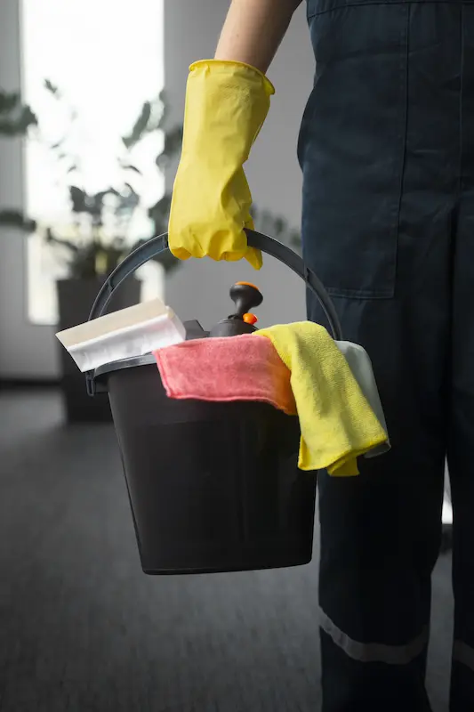

Pratik Bilgiler
İnatçı Halı Lekeleri Nasıl Çıkar
Kahve, çay veya yağ lekeleri kabusunuz olmasın. Evde uygulayabileceğiniz basit yöntemlerle halılarınızı ilk günkü haline getirin...
Devamını Oku
Yaşam alanlarınız için hayat kurtaran temizlik tüyoları, zorlu lekelerle baş etme yöntemleri ve sağlıklı hijyen önerileri bu sayfada. Ankara VIP Temizlik olarak, sadece evinizi temizlemekle kalmıyor, 15 yıllık tecrübemizi sizinle paylaşıyoruz.
Eviniz ve ofisiniz için pratik bilgiler ve hijyen önerileri.
Kahve, çay veya yağ lekeleri kabusunuz olmasın. Evde uygulayabileceğiniz basit yöntemlerle halılarınızı ilk günkü haline getirin...
Devamını OkuGeleneksel temizlik ile profesyonel hijyen arasındaki farklar nelerdir? Sağlığınız için neden uzman desteği almalısınız?
Devamını Oku Rehber
Rehber
Evinizi köşe bucak temizlerken nereden başlamalısınız? Zaman kazandıran ve yormayan temizlik planlaması.
Devamını Oku Rehber
Rehber
Camlarınız sildikten hemen sonra yine mi bulanık? Profesyonel camcıların kullandığı karışım ve silme teknikleri burada.
Devamını OkuYerlerdeki boya damlaları ve fayanslardaki harç kalıntıları nasıl temizlenir? Yüzeye zarar vermeden temizlemenin yolları.
Devamını Oku Pratik Bilgiler
Pratik Bilgiler
Koltuk kumaşını yıpratmadan, kusma yapmadan leke çıkarmanın sırları nelerdir? Karbonat ve sirke mucizesi işe yarıyor mu?
Devamını OkuBanyo ve mutfak fayans aralarındaki kararmalardan kurtulmak için evde hazırlayabileceğiniz 3 etkili doğal karışım tarifi.
Devamını OkuKızartma sonrası dolaplara ve aspiratöre yapışan yağ lekeleri kabusunuz olmasın. En etkili ve kolay çözüm önerileri.
Devamını OkuHalı ve koltuklara yapışan kedi/köpek tüylerini toplamanın en pratik yolları. Alerji dostu temizlik ipuçları.
Devamını Oku